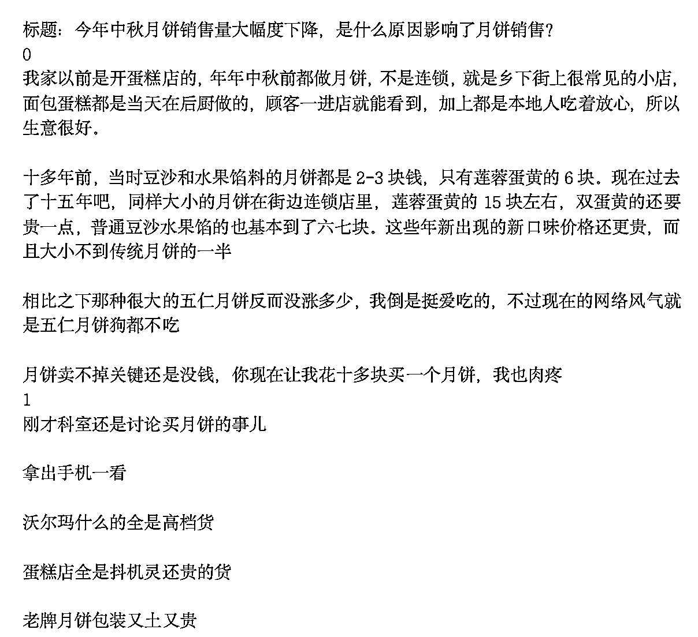
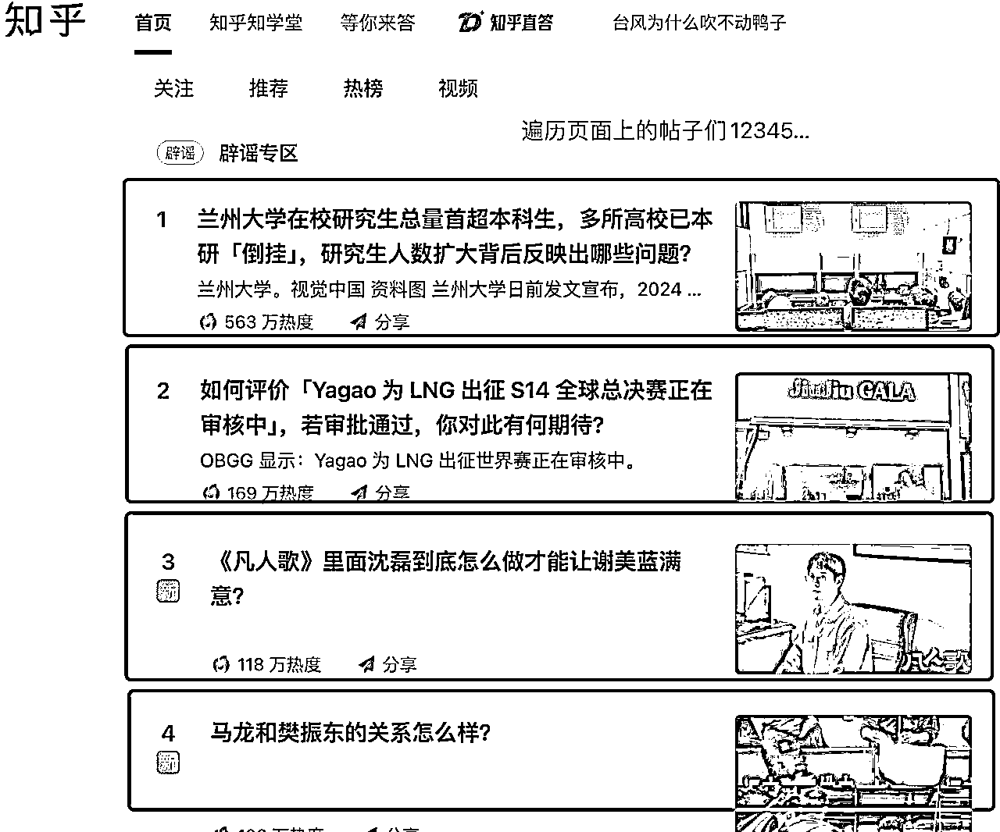
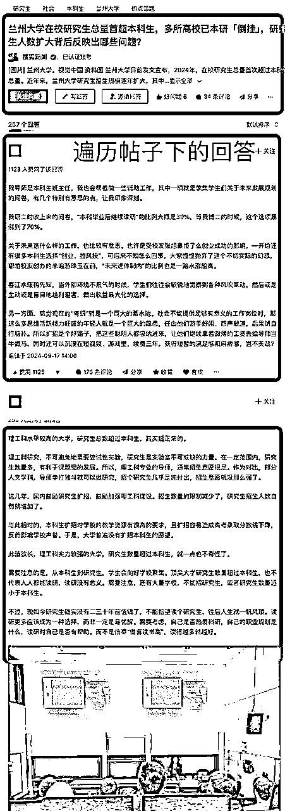
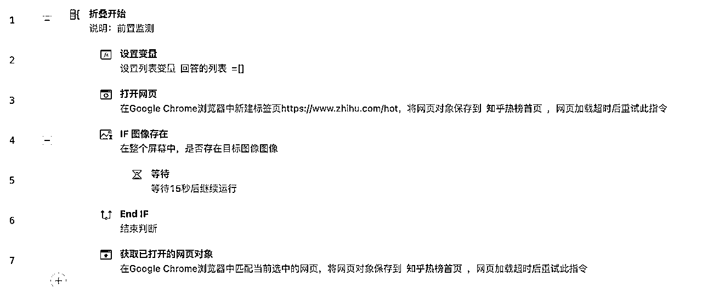
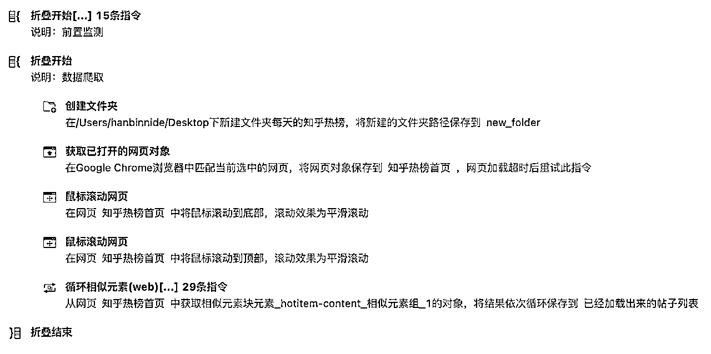
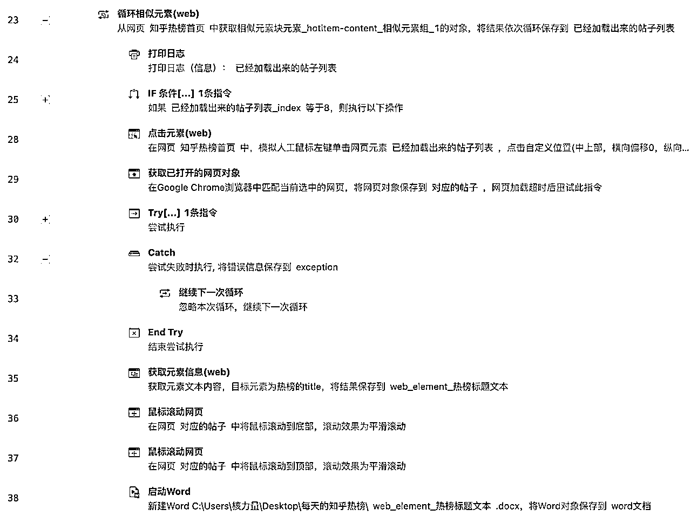
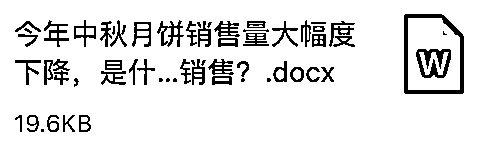
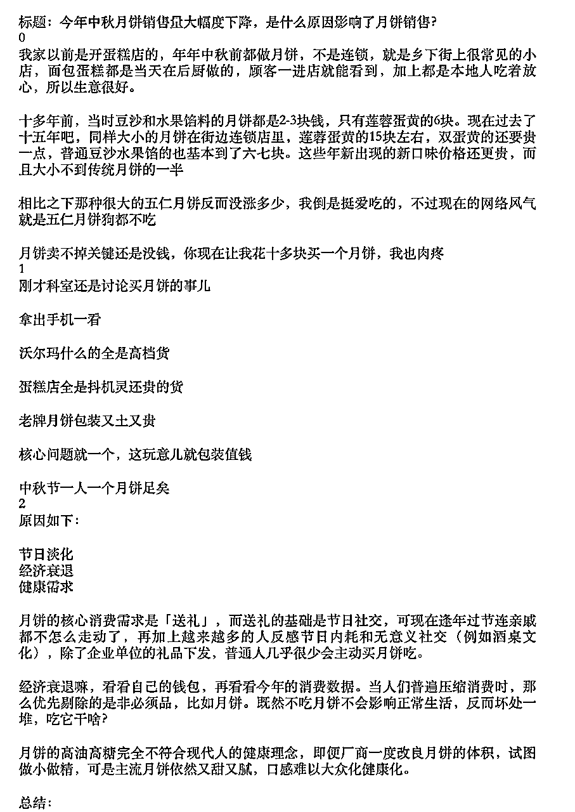
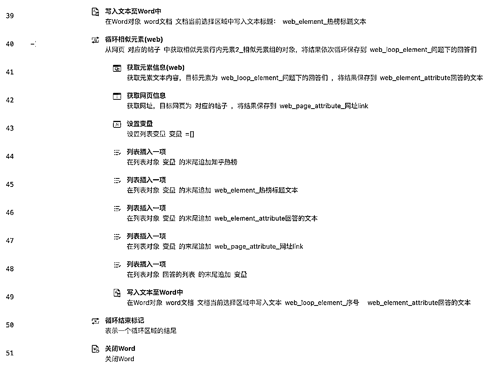

来源：https://vge3py7ug6.feishu.cn/docx/T19HdqfcsoxgQ5xlqlyckLFkncd
基于“好的素材导向更好的文章质量”的思想，我做了个知乎的文本采集rpa，它能实现的作用就是把每一个“话题”下面的帖子和回答，都给爬取下来塞到一个word里面，成为某一个话题的很好的素材。
成品：

帖子及回答遍历：



右边的就是先循环最外层的帖子，只有先循环完最外层的，才能够准备好一一打开帖子进去看里面的内容
具体的RPA代码见下方：

每一个帖子点进去，都要读取对应的帖子内容，和相应的回答
源码见下方：

整合成为word的文件素材：



有人可能问，如果我不想要热榜，而是其他的帖子呢？
其实是一通百通的，热榜也是帖子的一种，嘿嘿。
有问题随时交流。